Computer-Controlled Machining
Assigments: Building something on a CNC
- Group: Test runout, alignment, speeds, feeds, and toolpaths for your machine
- Individual assignment: Make something big on a CNC machine.
Personal Assignment - Model Design
I was needing a table for my 3D Printer, with lower slots to keep material cartridge, filament spools and tools. Main dimensions were 400 x 400 mm on top, and aproximatly 650 mm height. The structure must be rigid enough to reduce normal vibrations during work time, to avoid construction problems. I will use a 1/8" tool for this assignment. All will be assembled with only wood joints.
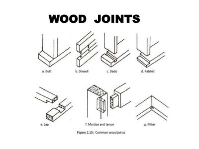
Made a basic box structure with 4 walls and 3 inner platforms to have 3 slots. Files can be found at the Downloads section. Used simple pressure joints for assembly (check wood joints picture).
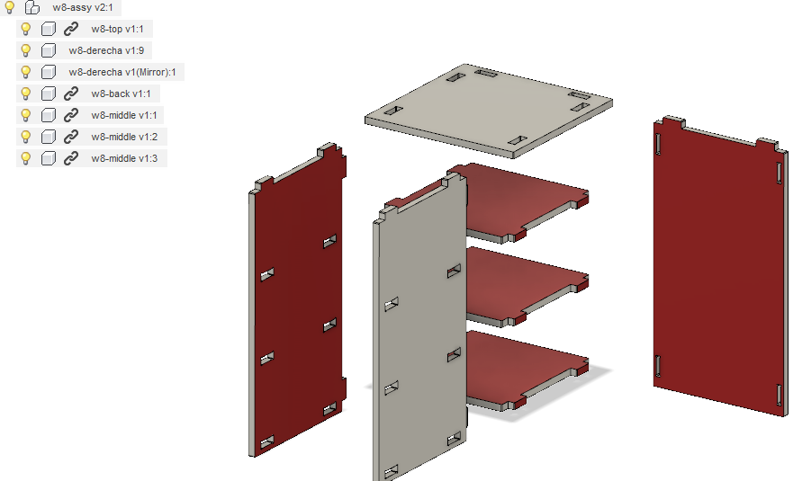
Once all files were designed, made a drawing of each piece. This allows me to export the drawing as a DXF files, to later send it to the Shopbot program.
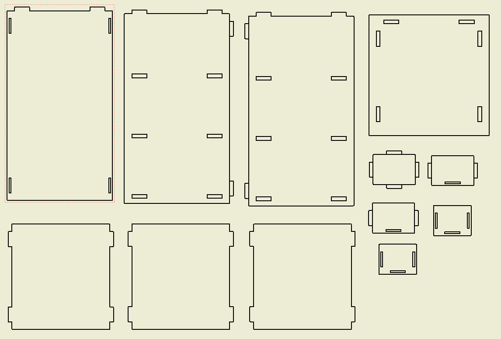
Some comments: I made a simple model, but keep it parametric because I didnt know which material thickness we have available at the lab. Finally used 12.5 mm MDF material. Originally, I made relief ears on each slot, but was noticed the machine software takes care of that, so removed.
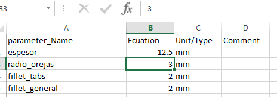
Machine Settings
Loaded my DXF file to the Shopbot software Partworks. Create a new file from "Create a new file" option.
First we need to add all pieces to the working area. This is donde with the "Align Objects". Once all pieces are placed correctly (nested), we need to create the toolpath for the Shopbot. This is done with "2D Profile Toolpath" button. There we will have to set up the parameters:
- Cutting Depths: We are using a 12.5 mm and want to get throught it, so select a passing distance (check parameters next).
- Tool Selection: We are needing a End mill tool.
- Machine Vectors: Since we are cutting material to obtain the part we want, select Outside/Right.
Next step take us to a simulation of our work. If seems nice, we go to setting machine.
When the program is already selected, we have to prepare the machine.
The first thing is secure MDF to machine work-table. I'm using wood screws scattered through the table.
Second, change the tool to the selected one.
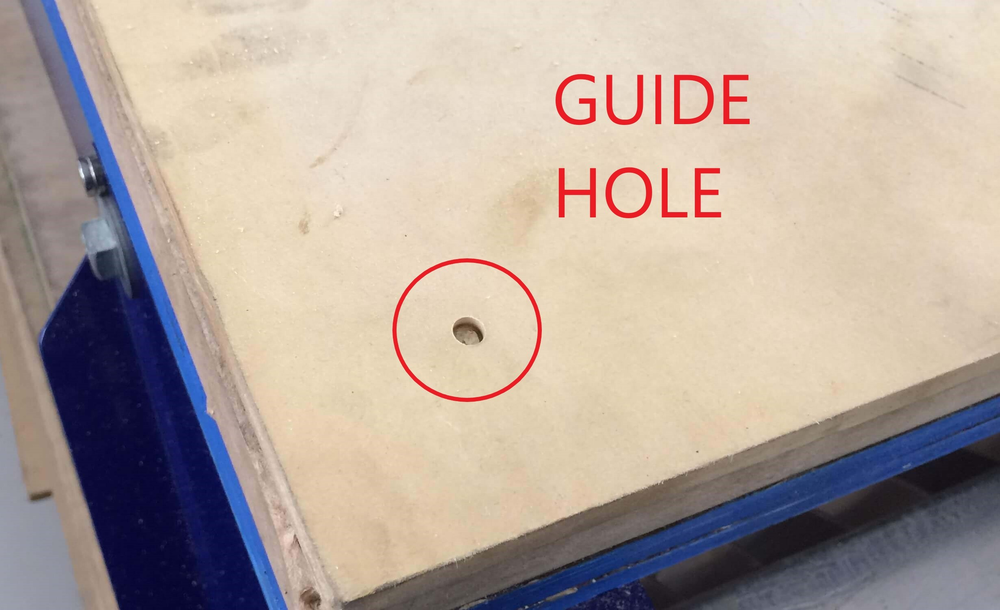
For this job I'm using a 1/8" end mill tool.
Using a metal sheet, we test the tool was attached to the machine at the right height.
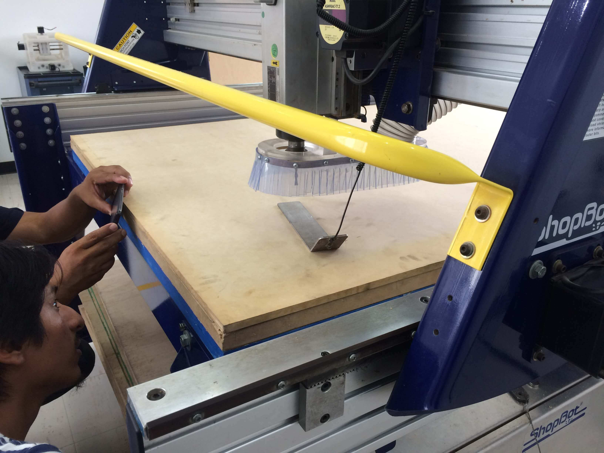
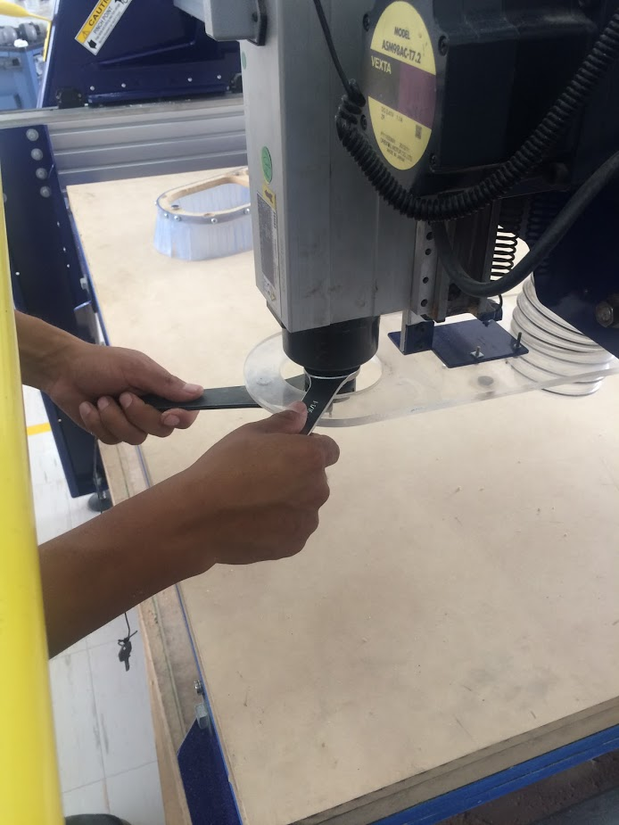
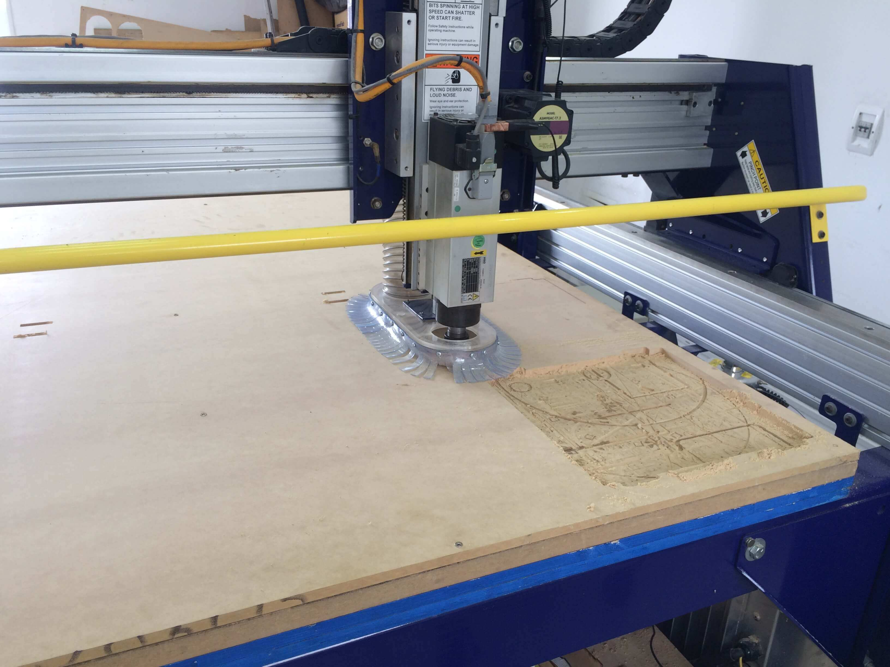
Finally, send the program and the Shopbot will start its task. The parameters summary are:
- Tool: 1/8" Straight
- Speed: 50.8mm/sec
- Speed Z: 2.00mm/sec
- Spindle: 14000 rpm
- Initial Pos: 0,0,20
- Z safe: 6.0mm
- Z min.: -13.7mm
- ETA: 01:18:24
- Max depth: 13.7mm
Some comments: If closing gaps in the vectors is needed, using "Join vectors" will help. Also, as said before, I remove the slot's relief ears to be added in this part, but we forgot to do that.
Assembly
Using a rubber maul I started with assembly. I thought would have problems without slot reliefs, but in the end it was really smooth.
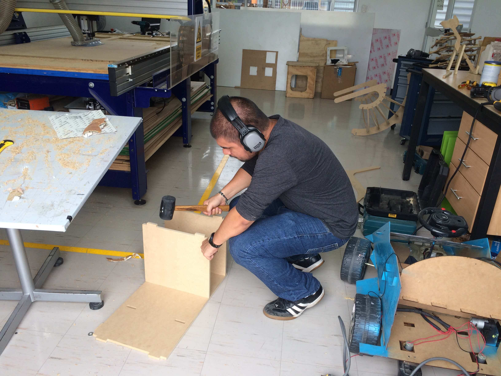
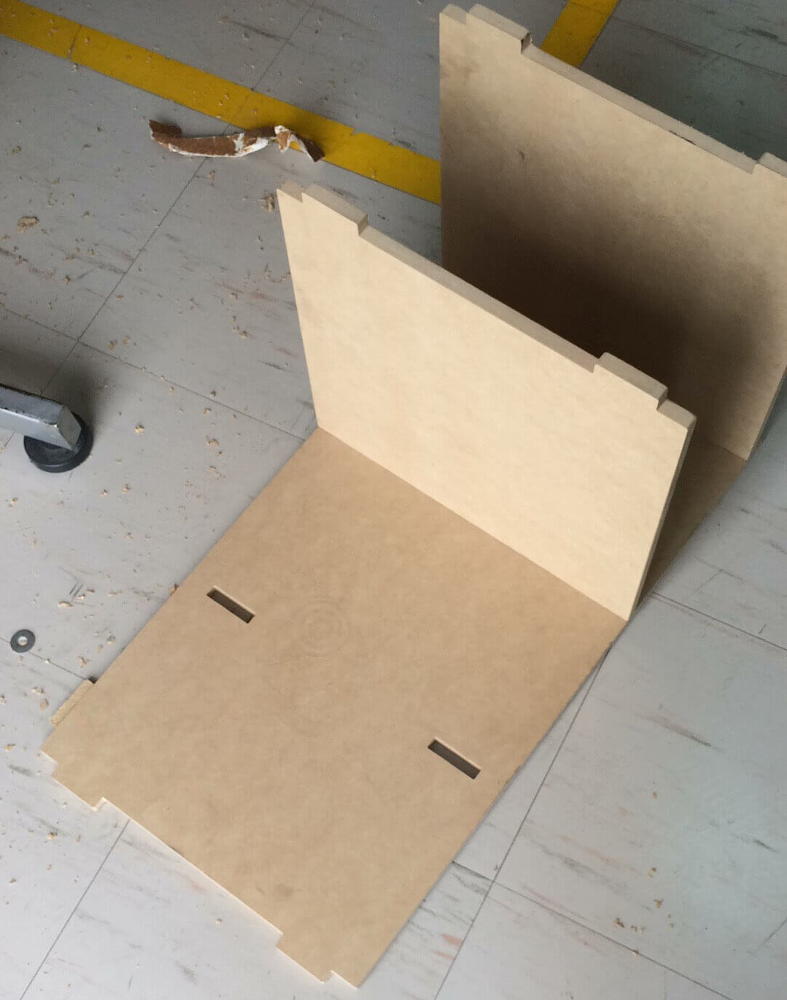
It's completed!
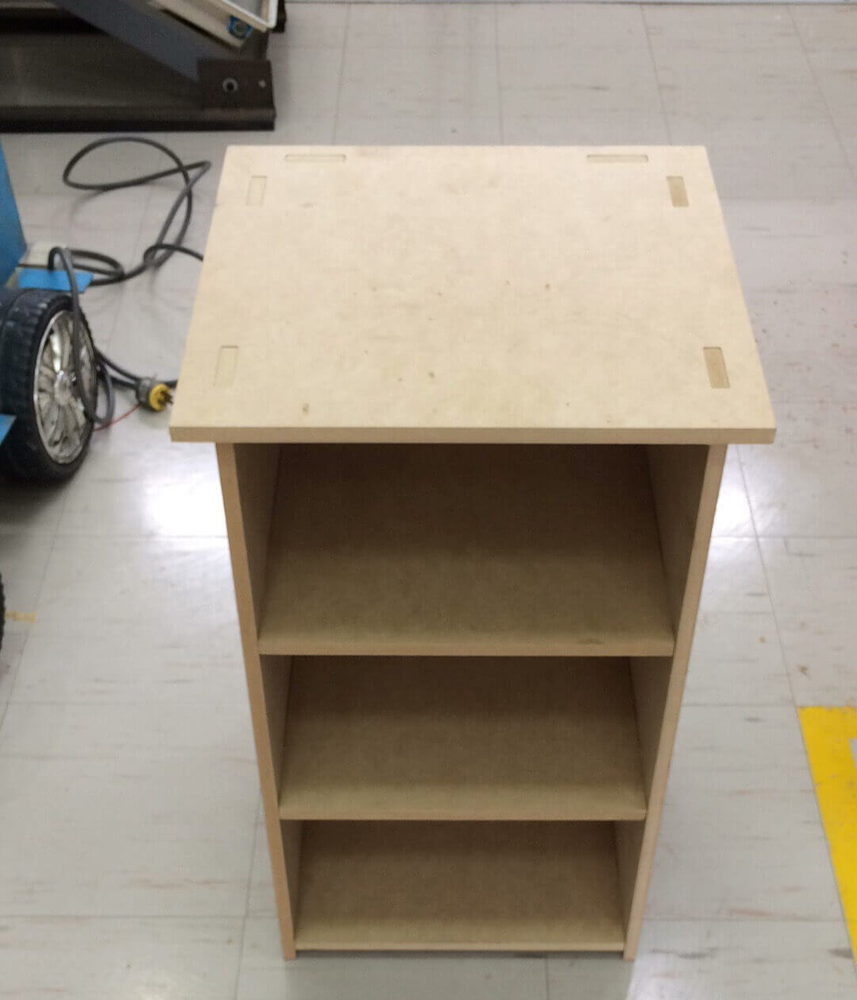